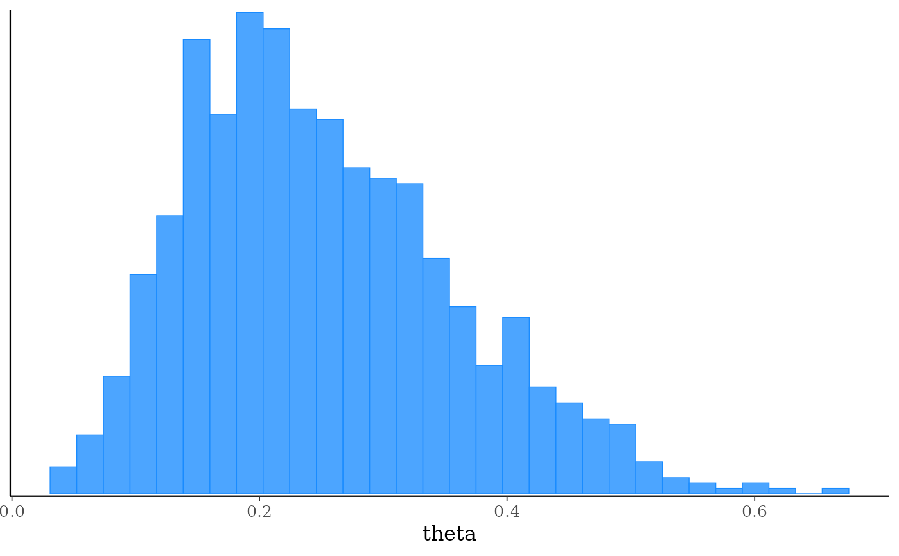

The $variational() method of a CmdStanModel object runs
Stan's Automatic Differentiation Variational Inference (ADVI) algorithms.
The approximation is a Gaussian in the unconstrained variable space. Stan
implements two ADVI algorithms: the algorithm="meanfield" option uses a
fully factorized Gaussian for the approximation; the algorithm="fullrank"
option uses a Gaussian with a full-rank covariance matrix for the
approximation. See the
CmdStan User's Guide
for more details.
Any argument left as NULL will default to the default value used by the
installed version of CmdStan. See the CmdStan User's Guide for more details on the
default arguments. These values are also available via the
$cmdstan_defaults method.
Usage
variational(
data = NULL,
seed = NULL,
refresh = NULL,
init = NULL,
save_latent_dynamics = FALSE,
output_dir = getOption("cmdstanr_output_dir"),
output_basename = NULL,
sig_figs = NULL,
threads = NULL,
opencl_ids = NULL,
algorithm = NULL,
iter = NULL,
grad_samples = NULL,
elbo_samples = NULL,
eta = NULL,
adapt_engaged = NULL,
adapt_iter = NULL,
tol_rel_obj = NULL,
eval_elbo = NULL,
draws = NULL,
show_messages = TRUE,
show_exceptions = TRUE,
save_cmdstan_config = getOption("cmdstanr_save_config", FALSE),
compress = getOption("cmdstanr_compress", "none")
)Arguments
- data
(multiple options) The data to use for the variables specified in the data block of the Stan program. One of the following:
A named list of R objects with the names corresponding to variables declared in the data block of the Stan program. Internally this list is then written to JSON for CmdStan using
write_stan_json(). Seewrite_stan_json()for details on the conversions performed on R objects before they are passed to Stan.A path to a data file compatible with CmdStan (JSON or R dump). See the appendices in the CmdStan guide for details on using these formats.
NULLor an empty list if the Stan program has no data block.
- seed
(non-negative integer(s)) A seed for the (P)RNG to pass to CmdStan. In the case of multi-chain sampling the single
seedwill automatically be augmented by the run (chain) ID so that each chain uses a different seed. The exception is the transformed data block, which defaults to using same seed for all chains so that the same data is generated for all chains if RNG functions are used. The only timeseedshould be specified as a vector (one element per chain) is if RNG functions are used in transformed data and the goal is to generate different data for each chain.- refresh
(non-negative integer) The number of iterations between printed screen updates. If
refresh = 0, only error messages will be printed.- init
(multiple options) The initialization method to use for the variables declared in the parameters block of the Stan program. One of the following:
A real number
x > 0. This initializes all parameters randomly between[-x, x]on the unconstrained parameter space.The number
0. This initializes all parameters to0on the unconstrained parameter space.A character vector of paths to JSON or Rdump files containing initial values for all or some parameters. For MCMC and Pathfinder, if only a single file is provided it will be reused for all chains and paths. See
write_stan_json()to write R objects to JSON files compatible with CmdStan.A list of lists containing initial values for all or some parameters. For MCMC the list should contain a sublist for each chain, and for Pathfinder it should contain a sublist for each path. For other model fitting methods there should be just one sublist. The sublists should have named elements corresponding to the parameters for which you are specifying initial values. See Examples. A tuple parameter is given as an unnamed list of its elements and a complex parameter as an R complex value, see
write_stan_json().A function that returns a single list with names corresponding to the parameters for which you are specifying initial values. The function can take no arguments or a single argument
chain_id. For MCMC and Pathfinder, the function is called once for each chain or path. If the function has thechain_idargument, it receives the chain or path number, starting at 1. See Examples.A
CmdStanMCMC,CmdStanMLE,CmdStanVB,CmdStanPathfinder, orCmdStanLaplacefit object. If the fit object's parameters are only a subset of the model parameters then the other parameters will be drawn by Stan's default initialization. The fit object must have at least some parameters that are the same name and dimensions as the current Stan model. For thesampleandpathfindermethods, which need one initialization per chain or path, the inits are drawn from the fit object without replacement, so it must contain at least as many draws as the number of chains/paths. ForCmdStanVB,CmdStanLaplace, andCmdStanPathfinderfit objects the draws must additionally be distinct. ACmdStanMLEfit object is the exception: its single draw (the mode) is used to initialize every chain or path. When aCmdStanPathfinderfit object is used as the init, if CmdStan actually performed PSIS resampling (which requiresnum_paths > 1,psis_resample = TRUE, andcalculate_lp = TRUE), CmdStanR selects from the returned draws using uniform weights to avoid applying importance weights again. If CmdStan did not PSIS-resample the output andcalculate_lp = TRUE, CmdStanR selects draws using Pareto-smoothed importance weights. This includes single-path fits withpsis_resample = TRUE, because CmdStan does not PSIS-resample single-path output. Ifcalculate_lp = FALSE, uniform weights are used because importance weights cannot be calculated. PSIS resampling is used to select the draws forCmdStanVB, andCmdStanLaplacefit objects.A type inheriting from
posterior::draws. If the draws object has fewer draws than the number of requested chains/paths, the draws are reused in their existing order until each chain/path has an initialization. If there are more draws than requested chains/paths, draws are selected uniformly without replacement. If the draws object's parameters are only a subset of the model parameters then the other parameters will be drawn by Stan's default initialization. The draws object must have at least some parameters that are the same name and dimensions as the current Stan model.
- save_latent_dynamics
(logical) Should auxiliary diagnostic information about the sampler or variational algorithm be written to diagnostic CSV files? This argument replaces CmdStan's
diagnostic_fileargument. The content is controlled by the user's CmdStan installation. The default isFALSE, which is appropriate for almost every use case. To save temporary diagnostic files permanently, use$save_latent_dynamics_files().- output_dir
(string) A path to a directory where CmdStan should write its output CSV files. For MCMC there will be one file per chain; for other methods there will be a single file. For interactive use this can typically be left at
NULL(temporary directory) since CmdStanR makes the CmdStan output (posterior draws and diagnostics) available in R via methods of the fitted model objects. This can be set for an entire R session usingoptions(cmdstanr_output_dir). The behavior ofoutput_diris as follows:If
NULL(the default), then the CSV files are written to a temporary directory and only saved permanently if the user calls one of the$save_*methods of the fitted model object (e.g.,$save_output_files()). These temporary files are removed when the fitted model object is garbage collected (manually or automatically).If a path, then the files are created in
output_dirwith names corresponding to the defaults used by$save_output_files().
- output_basename
(string) A string to use as a prefix for the names of the output CSV files of CmdStan. If
NULL(the default), the basename of the output CSV files is composed of the model name, timestamp, and a six-character random hexadecimal suffix.- sig_figs
(positive integer) The number of significant figures (up to a maximum of 18) to use when storing the output values. If
NULL(the default), the default from the installed CmdStan version is used. Use$cmdstan_defaults()to check that default. Increasing this value will result in larger output CSV files and thus an increased usage of disk space.- threads
(positive integer) If the model was compiled with threading support, the number of threads to use in parallelized sections (e.g., when using the Stan functions
reduce_sum()ormap_rect()).- opencl_ids
(integer vector of length 2) The platform and device IDs of the OpenCL device to use for fitting. The model must be compiled with
cpp_options = list(stan_opencl = TRUE), otherwise setting this argument is an error.- algorithm
(string) The algorithm. Either
"meanfield"or"fullrank".- iter
(positive integer) The maximum number of iterations.
- grad_samples
(positive integer) The number of samples for Monte Carlo estimate of gradients.
- elbo_samples
(positive integer) The number of samples for Monte Carlo estimate of ELBO (objective function).
- eta
(positive real) The step size weighting parameter for adaptive step size sequence.
- adapt_engaged
(logical) Do warmup adaptation?
- adapt_iter
(positive integer) The maximum number of adaptation iterations.
- tol_rel_obj
(positive real) Convergence tolerance on the relative norm of the objective.
- eval_elbo
(positive integer) Evaluate ELBO every Nth iteration.
- draws
(positive integer) Number of approximate posterior samples to draw and save.
- show_messages
(logical) When
TRUE(the default), prints all output during the execution process, such as iteration numbers and elapsed times. If the output is silenced then the$output()method of the resulting fit object can be used to display the silenced messages.- show_exceptions
(logical) When
TRUE(the default), prints all informational messages, for example rejection of the current proposal. Disable if you wish to silence these messages, but this is not usually recommended unless you are very confident that the model is correct up to numerical error. If the messages are silenced then the$output()method of the resulting fit object can be used to display the silenced messages.- save_cmdstan_config
(logical) When
TRUE, call CmdStan with argument"output save_config=1"to save a JSON file which contains the argument tree and extra information (equivalent to the output CSV file header). The default isFALSEbut can be set toTRUEfor an entire R session byoptions(cmdstanr_save_config = TRUE).- compress
(string) Compression to apply to the output CSV files after CmdStan finishes (including latent dynamics files, if saved):
"none"(the default),"gzip", or"bzip2". The fit reads compressed files by decompressing them to a temporary copy first, which makes each read slower in exchange for using less disk space. Thecmdstanr_compressoption sets the default for every fitting method.
Value
A CmdStanVB object.
References
Kucukelbir, A., Tran, D., Ranganath, R., Gelman, A., and Blei, D. M. (2017). Automatic differentiation variational inference. Journal of Machine Learning Research, 18(14), 1-45.
Stan Development Team. Stan Reference Manual (Algorithms section, variational inference): https://mc-stan.org/docs/reference-manual/
Stan Development Team. Stan documentation: https://mc-stan.org/users/documentation/
Stan Development Team. CmdStan User's Guide: https://mc-stan.org/docs/cmdstan-guide/
See also
Other CmdStanModel methods:
model-method-build_info,
model-method-check_syntax,
model-method-cmdstan_defaults,
model-method-diagnose,
model-method-expose_functions,
model-method-format,
model-method-generate-quantities,
model-method-is_current,
model-method-laplace,
model-method-model-info,
model-method-optimize,
model-method-pathfinder,
model-method-sample,
model-method-sample_mpi,
model-method-variables
Examples
# \dontrun{
file <- file.path(cmdstan_path(), "examples/bernoulli/bernoulli.stan")
mod <- cmdstan_model(file)
stan_data <- list(N = 10, y = c(0,1,0,0,0,0,0,0,0,1))
# Mean-field ADVI by default
fit <- mod$variational(data = stan_data, seed = 123)
#> ------------------------------------------------------------
#> EXPERIMENTAL ALGORITHM:
#> This procedure has not been thoroughly tested and may be unstable
#> or buggy. The interface is subject to change.
#> ------------------------------------------------------------
#> Gradient evaluation took 3e-06 seconds
#> 1000 transitions using 10 leapfrog steps per transition would take 0.03 seconds.
#> Adjust your expectations accordingly!
#> Begin eta adaptation.
#> Iteration: 1 / 250 [ 0%] (Adaptation)
#> Iteration: 50 / 250 [ 20%] (Adaptation)
#> Iteration: 100 / 250 [ 40%] (Adaptation)
#> Iteration: 150 / 250 [ 60%] (Adaptation)
#> Iteration: 200 / 250 [ 80%] (Adaptation)
#> Success! Found best value [eta = 1] earlier than expected.
#> Begin stochastic gradient ascent.
#> iter ELBO delta_ELBO_mean delta_ELBO_med notes
#> 100 -6.164 1.000 1.000
#> 200 -6.225 0.505 1.000
#> 300 -6.186 0.339 0.010 MEDIAN ELBO CONVERGED
#> Drawing a sample of size 1000 from the approximate posterior...
#> COMPLETED.
#> Finished in 0.1 seconds.
fit$summary()
#> # A tibble: 3 × 7
#> variable mean median sd mad q5 q95
#> <chr> <dbl> <dbl> <dbl> <dbl> <dbl> <dbl>
#> 1 lp__ -7.14 -6.93 0.528 0.247 -8.21 -6.75
#> 2 lp_approx__ -0.520 -0.244 0.740 0.326 -1.90 -0.00227
#> 3 theta 0.251 0.236 0.107 0.108 0.100 0.446
bayesplot::mcmc_hist(fit$draws("theta"))
#> `stat_bin()` using `bins = 30`. Pick better value `binwidth`.

# A full-rank approximation, with more draws from it.
# show_messages = FALSE here and below hides CmdStan's output. That's to
# keep these examples short, not a recommendation.
fit <- mod$variational(
data = stan_data,
seed = 123,
algorithm = "fullrank",
draws = 4000,
show_messages = FALSE
)
# More Monte Carlo draws for the gradient and the ELBO, for a less
# noisy optimization
fit <- mod$variational(
data = stan_data,
seed = 123,
grad_samples = 10,
elbo_samples = 500,
show_messages = FALSE
)
# }
# \dontrun{
# The rest of these examples work the same way for every fitting method.
# Draws as a posterior draws object
fit$draws()
#> # A draws_matrix: 1000 iterations, 1 chains, and 3 variables
#> variable
#> draw lp__ lp_approx__ theta
#> 1 -6.9 -0.09747 0.190
#> 2 -6.8 -0.03271 0.272
#> 3 -7.2 -0.38367 0.150
#> 4 -8.9 -2.69224 0.063
#> 5 -6.8 -0.00373 0.229
#> 6 -6.8 -0.00055 0.236
#> 7 -6.9 -0.11661 0.186
#> 8 -6.8 -0.00355 0.230
#> 9 -7.1 -0.41553 0.365
#> 10 -6.8 -0.03639 0.209
#> # ... with 990 more draws
fit$draws("theta", format = "df")
#> # A draws_df: 1000 iterations, 1 chains, and 1 variables
#> theta
#> 1 0.190
#> 2 0.272
#> 3 0.150
#> 4 0.063
#> 5 0.229
#> 6 0.236
#> 7 0.186
#> 8 0.230
#> 9 0.365
#> 10 0.209
#> # ... with 990 more draws
#> # ... hidden reserved variables {'.chain', '.iteration', '.draw'}
# Data as a path to a JSON or R dump file instead of a list
data_file <- file.path(
cmdstan_path(),
"examples/bernoulli/bernoulli.data.json"
)
fit <- mod$variational(data = data_file, seed = 123, show_messages = FALSE)
# Initial values from a function
fit <- mod$variational(
data = stan_data,
seed = 123,
init = function() list(theta = runif(1)),
show_messages = FALSE
)
fit$init()
#> [[1]]
#> [[1]]$theta
#> [1] 0.8694593
#>
#>
# Initial values from a previous fit (can be a fit from a different method)
fit2 <- mod$variational(
data = stan_data,
seed = 123,
init = fit,
show_messages = FALSE
)
# Initial values from a posterior::draws object
inits <- fit$draws()
fit <- mod$variational(
data = stan_data,
seed = 123,
init = inits,
show_messages = FALSE
)
# Suppress output from CmdStan while it runs
fit <- mod$variational(
data = stan_data,
seed = 123,
show_messages = FALSE,
show_exceptions = FALSE
)
# The CSV files CmdStan wrote, in a temporary directory by default. Move
# them to keep them past the R session. Replace tempdir below with a
# directory you'll keep.
fit$output_files()
#> [1] "/tmp/Rtmpa796TJ/bernoulli-202610191827-01-00b7ee.csv"
my_dir <- tempdir()
fit$save_output_files(dir = my_dir, basename = "bernoulli")
#> Moved 1 files and set internal paths to new locations:
#> - /tmp/Rtmpa796TJ/bernoulli-202610191827-01-218edd.csv
# Or use output_dir to have CmdStan write them there in the first place,
# here gzip-compressed to save disk space
fit <- mod$variational(
data = stan_data,
seed = 123,
output_dir = my_dir,
output_basename = "bernoulli",
compress = "gzip",
show_messages = FALSE
)
fit$output_files()
#> [1] "/tmp/Rtmpa796TJ/bernoulli-01.csv.gz"
# }